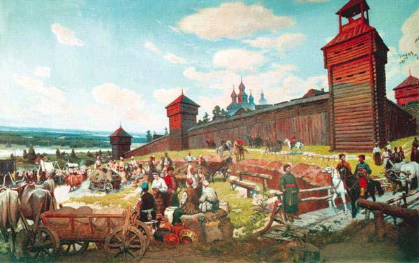

Історія Харкова, одного з найстаріших міст України, має багатий і різноманітний шлях розвитку. Місто було засноване в 1654 році як військова фортеця і отримало свою назву від річки Харків. Спочатку місто входило до складу "Слобідської України", де виникло козацьке поселення, яке відіграло важливу роль у подальшому розвитку Харкова.
Перша письмова згадка про Харків датується 1656 роком, коли воєвода Чугуєва, Сухотін, отримав царську грамоту. У 18 столітті місто стало важливим економічним, культурним і науковим центром, зокрема з появою перших університетів і наукових установ.
Зі збільшенням міського населення та території Харків перетворюється на ключову ланку в українському розвитку, здобувши важливе місце в індустріальному, науковому та культурному житті країни.